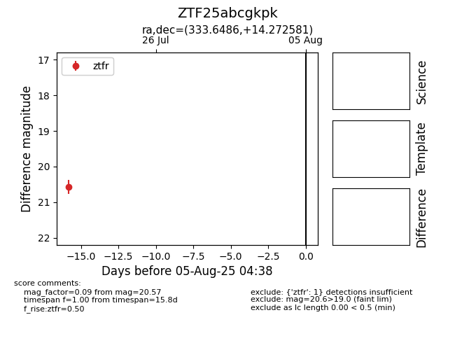

Target ZTF25abcgkpk at 2025-08-05 04:38, see:
FINK: fink-portal.org/ZTF25abcgkpk
Lasair: lasair-ztf.lsst.ac.uk/objects/ZTF25abcgkpk
ALeRCE: alerce.online/object/ZTF25abcgkpk
alt names
ZTF25abcgkpk (ztf,fink)
coordinates:
equatorial (ra, dec) = (333.6486,+14.27258)
galactic (l, b) = (75.4529,-33.77159)
photometry
last ztfr=20.57
1 ztfr detections
